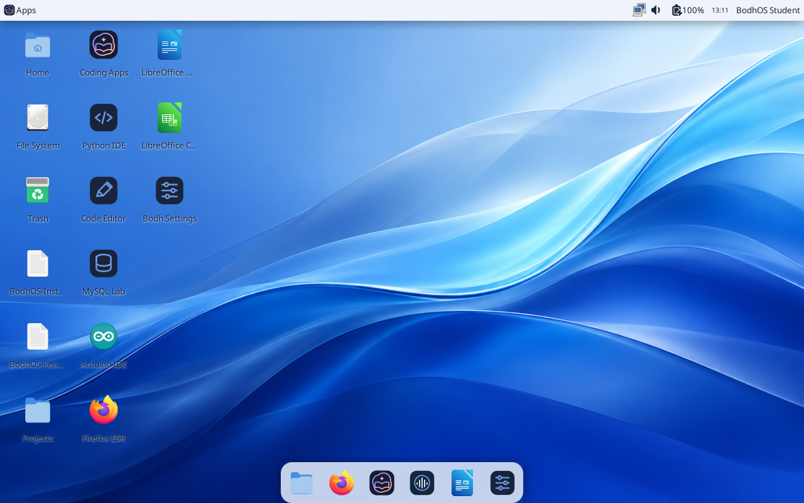

Bodh OS 0.3.2 · 64 bit Intel and AMD PCs
More room to learn.
A clean native desktop with coding apps, saved projects and a useful dock. Built on Debian and XFCE.
Three simple steps
- Save the helper in a new empty folder.
- Open it and wait for SUCCESS · VERIFIED ISO READY. It downloads both parts, joins them and checks the complete file.
- Use BodhOS-PC-0.3.2-amd64.iso in a VM or copy it onto your existing Ventoy USB.
The helper prepares a file. It does not install Bodh OS or format a drive. Follow the installation guide.
Manual download, Linux and macOS
Download both parts. Windows users can open Join PC ISO.cmd beside them. Linux and macOS commands are in the guide. Select the complete ISO, never a part or Source code ZIP.
A lighter approach to polish
The Ocean still wallpaper, flowing book logo and six useful dock shortcuts add colour without a live wallpaper or blur compositor. The top bar stays simple. Running windows are grouped. App shortcuts remain on the desktop.
Standard keeps restrained transparency. Reduced uses opaque surfaces with effects disabled. Existing custom layouts stay yours. See measured results.

Every included feature · Appearance and touchpad shortcuts
Try before installing
Back up a real computer before installing. Use live mode to check its devices first. VM checks do not certify physical WiFi, graphics, microphones, printers or touchpads. This PC image is not a native Apple silicon image. The older Intel Mac image remains experimental and unchanged.
Checksums and release files
Checksums · Test results · All release files
Complete ISO SHA256
2bd98635525ff40e8269fd8f8fa0e3a2ab77782dd706c1ad697313eca0fc6477